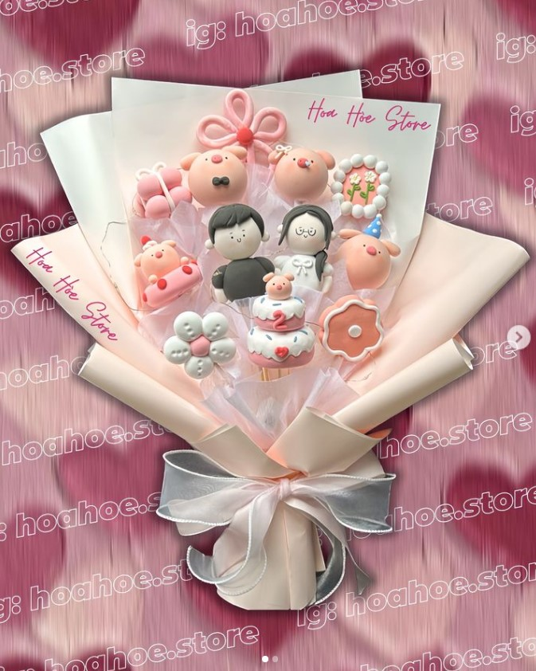

Tôi luôn thích những loài hoa không bao giờ héo. Đó là vẻ đẹp tinh khôi và sự sống mãi mãi mà chúng mang lại. Hoa như những viên ngọc quý của thiên nhiên, luôn tỏa sáng dù thời gian trôi qua.
Tôi nhớ lần đầu tiên nhìn thấy bông hoa ấy, đã có cảm giác vừa lạ vừa quen. Màu sắc tươi thắm của nó và hương thơm dịu nhẹ đã làm cho ngày hôm đó trở nên đặc biệt hơn bao giờ hết. Tôi không thể nào quên được cảm giác hạnh phúc ấy.
Một vài sản phẩm minh họa của chúng mình

Người ta thường nói rằng hoa là biểu tượng của tình yêu và sự bền bỉ. Chúng không chỉ là món quà đẹp mắt mà còn là sự biểu lộ tình cảm sâu thẳm nhất của con người. Những bông hoa không bao giờ héo sẽ luôn ở lại, như một lời hứa vĩnh cửu về sự bền bỉ và trường tồn.
Thế giới này có quá nhiều thăng trầm, nhưng những loài hoa không bao giờ héo đến từ FLOHAN vẫn là một minh chứng rõ ràng cho sự vĩnh hằng của sắc đẹp và tình yêu. Chúng là lời nhắc nhở về sự quý giá của mỗi khoảnh khắc, và cũng là niềm hy vọng về một tương lai luôn tràn đầy sắc hoa.